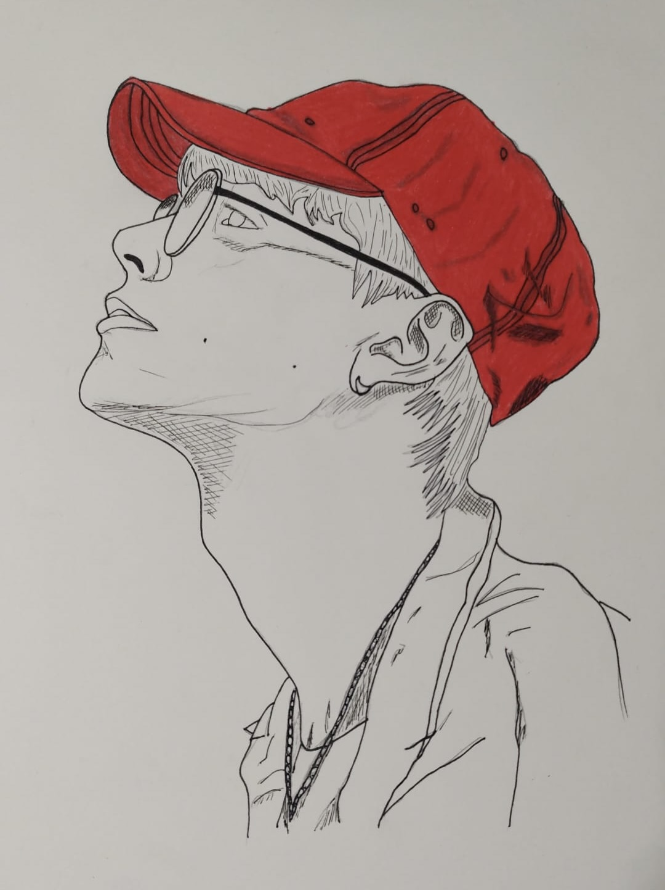
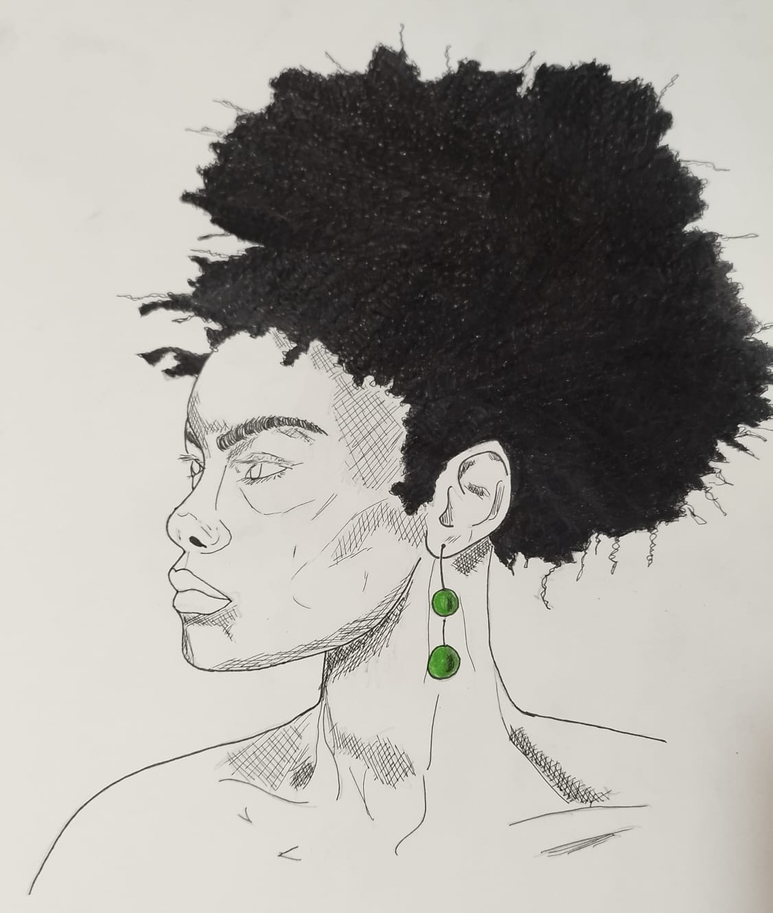
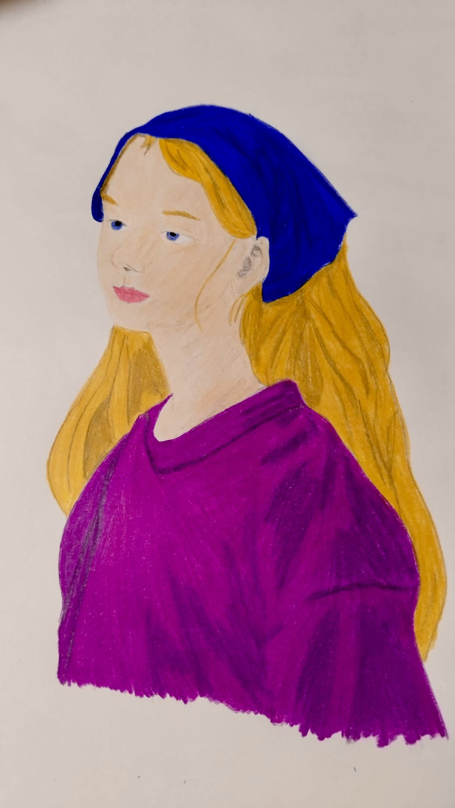
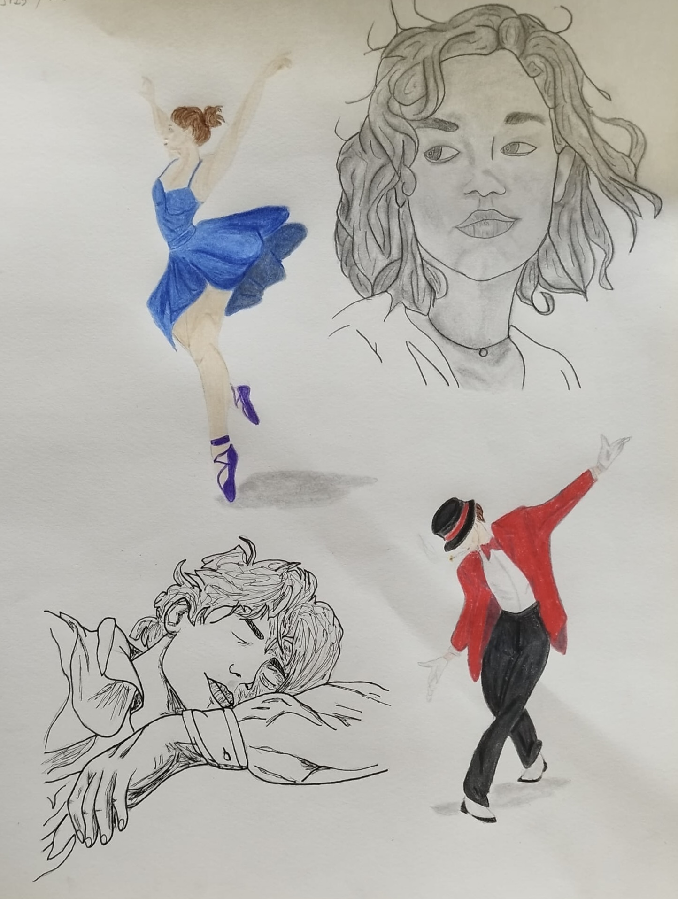

Art
A small collection of drawings and writing.





Tangled Echoes of a Silent Bond
An aphonic sound exhaled from nought,
No here, no there, just silence wrought.
A barren void, a hushed expanse,
Where space itself withdrew its stance.
Then, from the depths, a clangour bright,
A chorus born of tangled light.
A triumph of particles, paired yet free,
Rippling forth from the Dirac Sea.
They wandered blind, no will, no claim,
Bound by a thread with neither name.
A bond firmer than fate had wrought,
Yet frail and fleeting as a whisper caught.
The keenest minds in murmurs deep,
Wrestled with truths they scarce could keep,
Wondering about this inexplicable quiddity
That flooded their ideas with ambiguity.
Entangled thoughts, obscure yet grand,
Slipping like grains of quivering sand.
Pages burned with fervent lore,
To mend the cracks, to know the core.
While Nature, coy, with teasing laws,
Unveils our genius and all our flaws.
Now circuits hum in frozen light,
Coaxing qubits to recite
The whispered truths of worlds unseen,
Where chance and logic fuse between.
A race unfolds, who'll seize the key
To harness tangled destiny?
Yet still, the question lingers near:
Does Nature play, or merely sneer?
Daniele Iannotti
Ciascuno cresce solo se sognato
C'è chi insegna
guidando gli altri come cavalli
passo per passo:
forse c'è chi si sente soddisfatto
così guidato.
C'è chi insegna lodando
quanto trova di buono e divertendo:
c'è pure chi si sente soddisfatto
essendo incoraggiato.
C'è pure chi educa, senza nascondere
l'assurdo ch'è nel mondo, aperto ad ogni
sviluppo ma cercando
d'essere franco all'altro come a sé,
sognando gli altri come ora non sono:
ciascuno cresce solo se sognato.